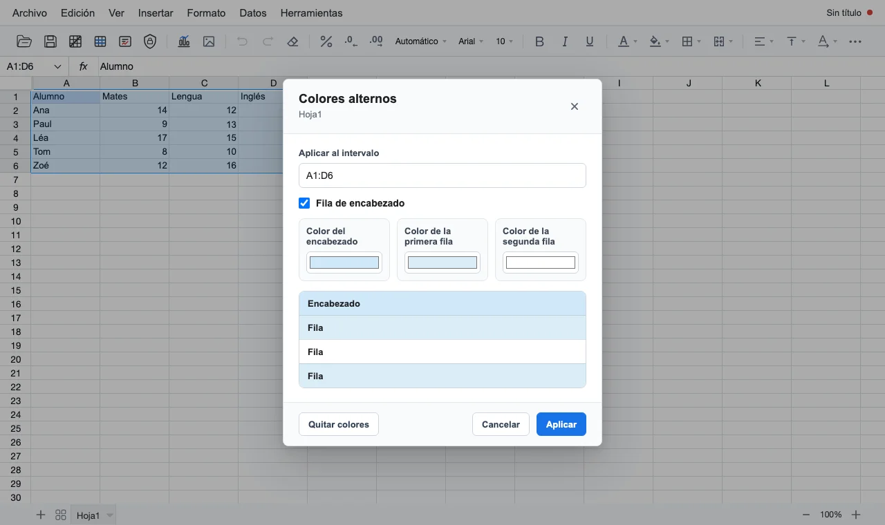

Formato
Texto
| Comando | Acceso |
|---|---|
| negrita, cursiva, subrayado | ; Ctrl B, Ctrl I, Ctrl U |
| fuente | lista Arial: trece fuentes |
| tamaño | lista 10, o Formato › Tamaño Fuente: 9 a 72 |
| color del texto, del fondo | |
| borrar el formato | , Formato › Borrar formato |
En la paleta de un color, Reiniciar color lo retira; PERSONALIZADO abre el selector del sistema.
Mientras se modifica una celda, el formato se aplica a la parte seleccionada del texto.
Alineación
| Comando | Opciones |
|---|---|
| horizontal | izquierda, centro, derecha |
| vertical | arriba, medio, abajo |
| rotación | inclinada, vertical, apilada |
| ajuste de texto | Desbordar: sobre las celdas vacías vecinas; Ajustar: en varias líneas; Cortar: cortado en el borde |
Sin alineación elegida, los números y las fechas van a la derecha, lo demás a la izquierda.
Bordes
traza el borde elegido; su flecha da los lados (superior, exterior, interiores, todos, ninguno, diagonal), el color y el estilo del trazo. Elegir color y estilo antes que el lado.
Combinar
o Formato › Juntar celdas:
| Comando | Efecto |
|---|---|
| Unir todo | una sola celda, que conserva un solo contenido |
| Verticalmente | una celda por columna |
| Horizontalmente | una celda por fila |
| Separar | devuelve las celdas |
Un rango que contiene celdas combinadas no puede ordenarse ni filtrarse.
Colores alternos
o Formato › Colores alternos... colorea una fila de cada dos del rango seleccionado, con una fila de encabezado si se quiere. Los tres colores se pueden elegir.

Son colores de fondo corrientes: no siguen una ordenación ni una fila insertada. Quitar colores los borra del rango.
Cuadrícula
o Ver › Mostrar › Cuadrícula oculta o muestra las líneas grises, en todas las hojas del libro. La impresión tiene su propio ajuste.
Para un color que dependa del valor, véase Formato condicional.